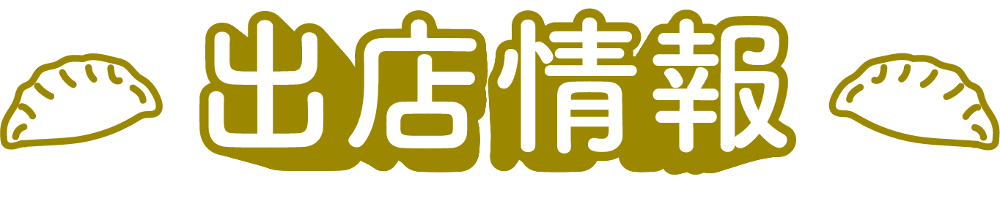

焼き餃子
揚げ餃子
蒸し餃子
博多ぎょうざ堂
福岡を代表する老舗餃子専門店。 国産豚とキャベツを使用し、ひとつひとつ手包みで仕上げています。 外はカリッと、中は肉汁たっぷりの博多スタイルが人気。
肉汁あふれる焼き餃子
- 価格
- 6個入り 580円（税込）
香ばしく焼き上げた皮の中には、あふれんばかりの肉汁がぎっしり。
厳選された国産豚とキャベツの旨味が広がる、満足感たっぷりの一品です。
一口噛めば、ジュワッとした肉汁が口いっぱいに広がります。
中華食堂 蒸々屋（むしむしや）
優しい味わいの蒸し料理を得意とする中華食堂。 ふっくら蒸し上げた餃子や点心が好評で、家族連れにも人気。 手作りの皮が自慢です。
ふっくら蒸しあげ餃子
- 価格
- 8個入り 520円（税込）
もちもちの皮で包んだ餃子を、丁寧に蒸し上げた優しい味わいの一皿。
蒸気でふっくら仕上げた皮はとろけるようにやわらかく、
野菜と肉の旨味がじんわり広がります。
特製のポン酢だれをつけて、さっぱりとお召し上がりください。
餃子茶寮 彩香（さいか）
和のテイストを取り入れた創作中華が魅力の茶寮。 旨味たっぷりのスープ餃子をはじめ、彩り豊かなメニューを 提供しています。
中華風スープ餃子
- 価格
- 5個入り 680円（税込）
鶏ガラと香味野菜をじっくり煮込んだ特製スープに、
つるりとした水餃子を浮かべた人気メニュー。
旨味たっぷりのスープと、もちもち食感の餃子が絶妙に絡み合います。
彩り豊かな野菜とご一緒に、ほっと温まる一杯をどうぞ。
餃子バル 風雷坊（ふうらいぼう）
スタイリッシュな餃子バルとして若者に人気。 ビールやワインとの相性を考えたスパイシーな揚げ餃子が名物。 夜の一杯にぴったり。
カリもち！揚げ餃子
- 価格
- 5個入り 600円（税込）
外はカリッ、中はもちっと食感が楽しい、人気の揚げ餃子。
特製スパイスを混ぜ込んだ肉餡は、香ばしい皮と相性抜群。
おつまみとしても、おやつ感覚でも楽しめるクセになる味です。
熱々のうちに、レモンを絞ってどうぞ！
Mediterraneo Gyoza（メディテラネオ ギョウザ）
地中海の食文化を融合した創作餃子専門店。 オリーブやハーブを使った新感覚の餃子で女性客に人気。見た目も華やか。
お口に広がる地中海の風
- 価格
- 5個入り 720円（税込）
オリーブオイルとハーブで仕上げた、地中海スタイルの創作餃子。
しっとりとした皮に包まれた具材は、チーズ・オリーブ・トマトの香りが絶妙なバランス。
芳醇なオイルソースとハーブの香りが口いっぱいに広がります。
ワインにもぴったりな、上品な一皿。
餃子処 湯心（ゆごころ）
素材の味を大切にした、体にやさしい餃子を提供。 化学調味料不使用の水餃子が看板商品。 シンプルながら深い味わいです。
素材の旨味ひきたつ水餃子
- 価格
- 8個入り 550円（税込）
国産野菜と豚肉の旨味をぎゅっと閉じ込めた、つるんと食感の水餃子。
素材本来の味を生かすため、化学調味料を使わず丁寧に手包み。
あっさりとした特製だれで、いくつでも食べられる軽やかな味わいです。
熱々のままでも、冷やしてもおいしい万能餃子。
辛味房 赤龍（しんみぼう せきりゅう）
本格四川の技を受け継ぐ辛味料理専門店。 花椒を効かせた「しびうまラー油餃子」が人気で、 辛党ファンが多数来店
しびうまラー油餃子
- 価格
- 6個入り 620円（税込）
自家製の花椒ラー油をたっぷり絡めた、刺激的な一皿。
ひと口食べれば、山椒のしびれと唐辛子の辛味がじわっと広がり、
ジューシーな肉餡の旨味が後を引きます。
辛党必食！ 病みつきになる辛さでリピーター続出。
ふくおか餃子FESは、福岡の餃子文化の拡大に挑戦しています！
子供からお年寄りまで、全ての人に愛される餃子。
福岡では多彩な食材を使用した、独自の餃子文化が育まれてきました。
他にはない、福岡の餃子だから味わえるもの。
皮につまったたっぷりのこだわりを、たくさんの人に知ってもらいたい。
そんな想いから、ふくおか餃子FESは生まれました。
福岡の人、日本全国の人、さらには世界中の人にまで。
「福岡って、餃子も美味しいんだね！」
そんな希望が、常識になる日まで。
NO GYOZA, NO FUKUOKA LIFE!